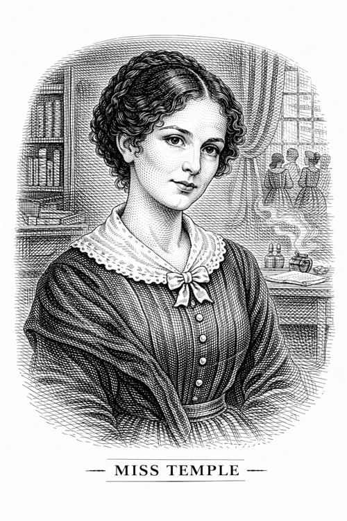

Señorita Temple

Es posiblemente el personaje más luminoso y bondadoso de la infancia y adolescencia de Jane. Es la superteniente de Lowood. Jane la describe como una mujer de belleza serena, inteligente y con una voz autoritaria pero bondadosa.
Personalidad e impacto en la vida de Jane
Representa el equilibrio perfecto entre la mente y el corazón, a lo que aspira Jane. A diferencia del director, ella cree que la educación debe nutrir el alma, no mortificarla.
Es muy culta, elegante y posee una dignidad que impone respeto hasta a sus superiores. Su modo de actuar no se basa en castigar a las niñas, sino en tener compasión por ellas, siguiendo así su propia brújula moral.
La señorita Temple es la primera figura adulta que reconoce el valor de Jane, no solo como estudiante, sino como persona. Además le da la oportunidad de defenderse de las acusaciones de "mentirosa". Habla con el señor Lloyd y limpia el nombre de la niña públicamente, enseñándole que la verdad siempre sale a la luz y la justicia existe.
Para Jane es un modelo a seguir, además de ser una figura de autoridad que la trata con ternura (actuando como una sustituta de madre). Bajo su tutela, Jane florece intelectual y emocionalmente, dejando de ser una niña rebelde para convertirse en una jóven educada, disciplinada y reflexiva. La presencia de la Srta. Temple transforma a Lowood de una "prisión" a un lugar de aprendizaje real para Jane.
Importancia del personaje
La señorita Temple es un personaje clave en el desarrollo de Jane, ya que representa el primer amor maternal y la primera figura de autoridad que la trata con ternura y respeto. Brontë la usa para demostrar que una mujer puede ser fuerte, independiente y respetada sin perder el carácter dulce y amable. Es el contrapunto necesario a la señora Reed.
Su influencia es tan profunda que, años después, cuando Jane es institutriz en Thornfield Hall, recuerda a la Srta. Temple con cariño y admiración, y busca en su propia experiencia para guiar a Adele, la niña a la que cuida.
Este personaje también simboliza el camino hacia la madurez de Jane. Cuando se marcha de la institución para casarse, impulsa a la muchacha a buscar nuevos horizontes. Sin su influencia, Jane nunca habría tenido la confianza necesaria para poner su anuncio en el periódico y buscar un trabajo como institutriz.